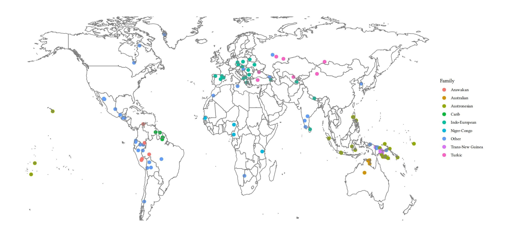

The Corpus
The Cross-linguistic Phonological Frequencies (XPF) Corpus consists of a set of grammars for over 200 languages. These grammars provide the translations from languages' alphabetic representations to their phonemic representations. Although grammars of well documented languages are included in this corpus (e.g. Hungarian), the grammars of several underdocumented and endangered languages (e.g. Wayana) as well as language isolates (e.g. Yuracare) have also been included. Below is a map representing the global spread of the languages within the corpus.

How can you use it?
Apart from having complete access to the corpus to use for your own research purposes, which is provided on github, we've included a few features below for quick analyses of different languages, and cross-linguistic comparison.